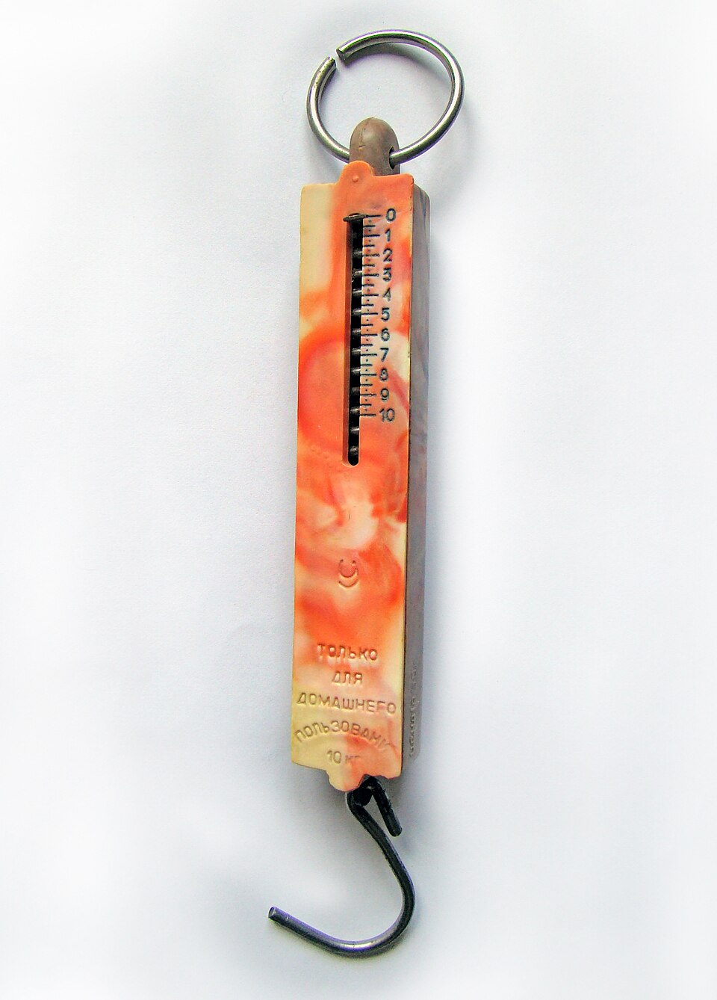
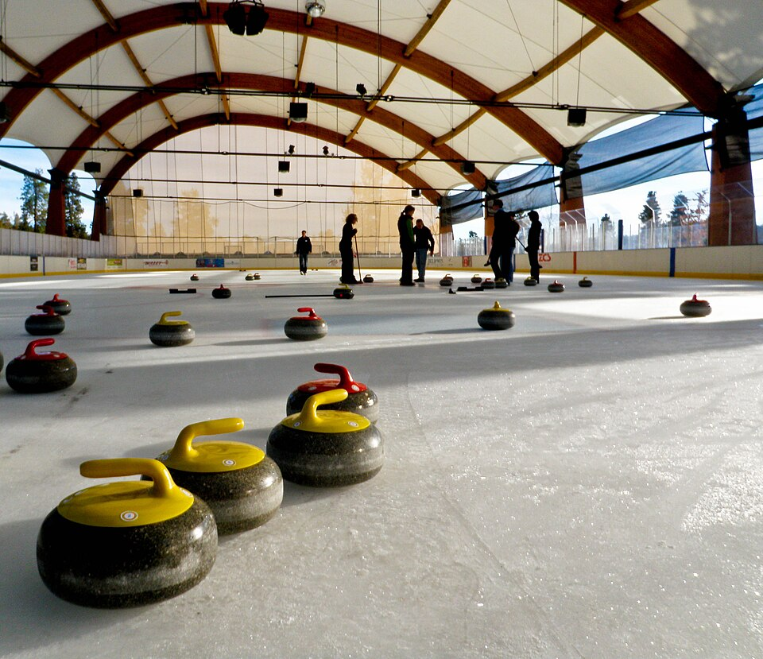
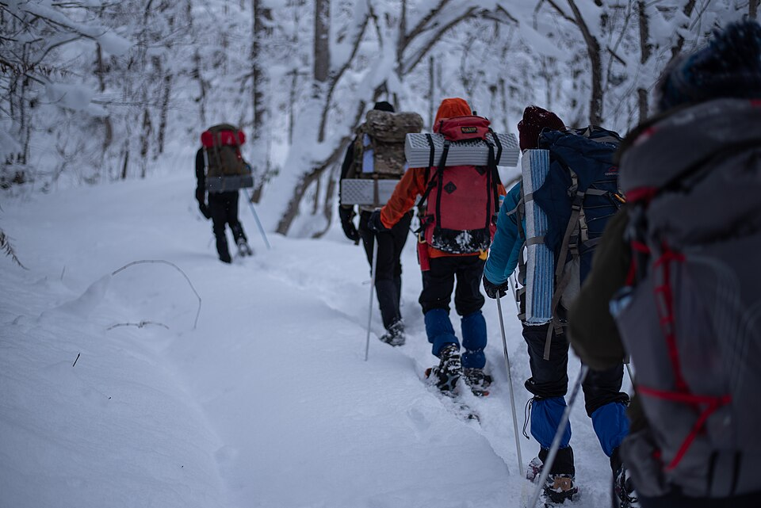
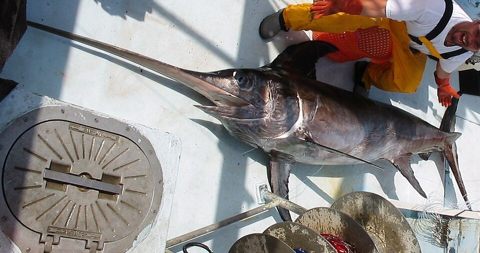

Lab 1 · Lesson 29 · 3D
Spring Lab
Hang slotted masses on a spring. Choose the spring and the planet, record your results and find the elastic limit.
| Force (N) | Extension (cm) |
|---|
Five lessons, hyper-real 3D labs, a Camouflage Safari game and a shuffled practice exam. Revise the whole of Exam 6: forces and springs, friction and speed, pressure, variation and natural selection, and adaptations.
Pushes, pulls, weight and springs.
A push or pull on an object, measured in newtons (N) with a newton meter. A force can start or stop movement, change direction or change shape.

F = k × e
F force (N), k spring constant (N/m), e extension (m). Extension is directly proportional to the force until the elastic limit.
| Force (N) | Extension (cm) |
|---|---|
| 1 | 2 |
| 2 | 4 |
| 3 | 6 |
| 5 | 10 |
Hang masses on springs on other planets in the Spring Lab.
Tap every statement you would put in a full-mark answer, then check.
Resisting forces, balanced forces and speed.

speed = distance ÷ time
Unit: m/s. On a speed-time graph a flat line is constant speed, a rising line is acceleration and a falling line is deceleration.
Push a sled across ice, wood, grass and sandpaper in the Friction Lab.
Tap every statement you would put in a full-mark answer, then check.
The same force can press hard or gently.
pressure = force ÷ area
Unit: pascal (Pa). More force or a smaller area gives more pressure. Less force or a bigger area gives less pressure.
A person weighs 600 N. Their shoes cover 0.1 m². Pressure = 600 ÷ 0.1 = 6000 Pa.
Snowshoes spread the weight over a larger area, so the pressure is lower and you do not sink.

Compare high heels, trainers, snowshoes and an elephant in the Pressure Lab.
No two individuals are exactly the same.
In a changing environment, individuals with helpful traits are more likely to survive and reproduce, so those traits become more common. If people choose the parents it is artificial selection (selective breeding).
Be the predator and watch selection happen in the Natural Selection Lab.
How living things fit their habitat, and what happens when it changes.

The place where an organism lives and finds food, water and shelter. When a habitat changes, species may adapt, move or die out. Biodiversity is the variety of living things.
Tap every statement you would put in a full-mark answer, then check.
Four hyper-real labs. Springs that stretch, sleds that slide, feet that sink and fish that evolve, all with touch, mouse or keyboard.
Hang slotted masses on a spring. Choose the spring and the planet, record your results and find the elastic limit.
| Force (N) | Extension (cm) |
|---|
Choose a surface and a push. Watch the green push arrow fight the red friction arrow, and read the speed-time graph.
Stand a person, then an elephant, on soft snow. Change the footwear and see how pressure = force ÷ area decides how far you sink.
Goals: find a very low pressure (below 20 kPa) and a very high one (over 200 kPa).
You are the predator. Tap the fish you can see. The survivors breed, and the colours of the next generation change.
Tap fish to catch them. Which colours are easiest to see?
Catch about 12 fish, then press Next generation. Try clear, muddy and weedy water.
A hidden-object hunt in 3D. Spot the best-adapted animal, or tap the card with the right answer. About two minutes, no lives.
Three animals (or three answer cards) stand in a snowfield, desert, forest or deep sea. Read the question and tap the right one: the fox that blends into the snow, the counter-shaded fish, the card with the correct unit. A wrong tap just shows you the answer and keeps you playing.
20 questions drawn at random from the bank. Answer orders reshuffle every time.
The booklet lists every key idea, check question and revision task for Lessons 29–33, ready to print.
Download the revision booklet (PDF)These are outside websites. They do not record your work here.